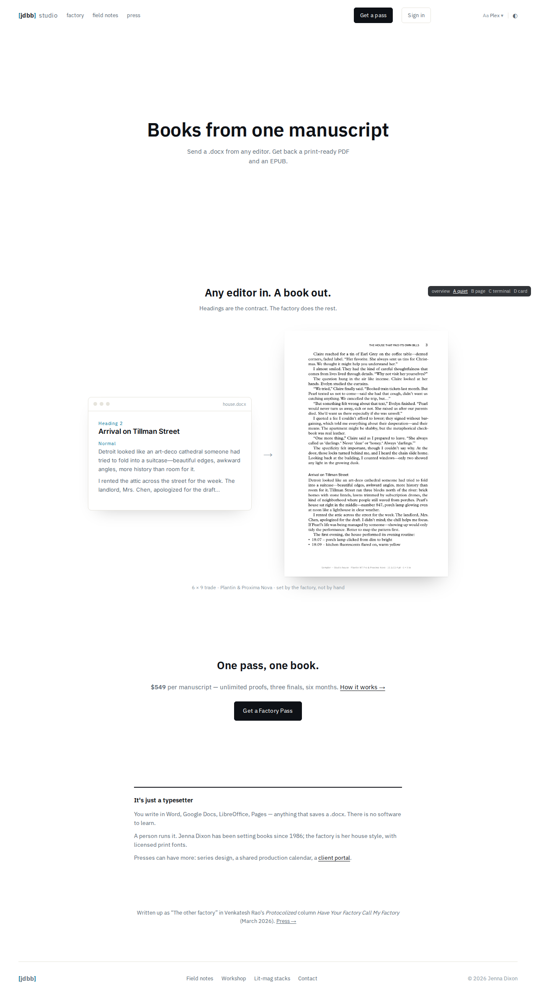
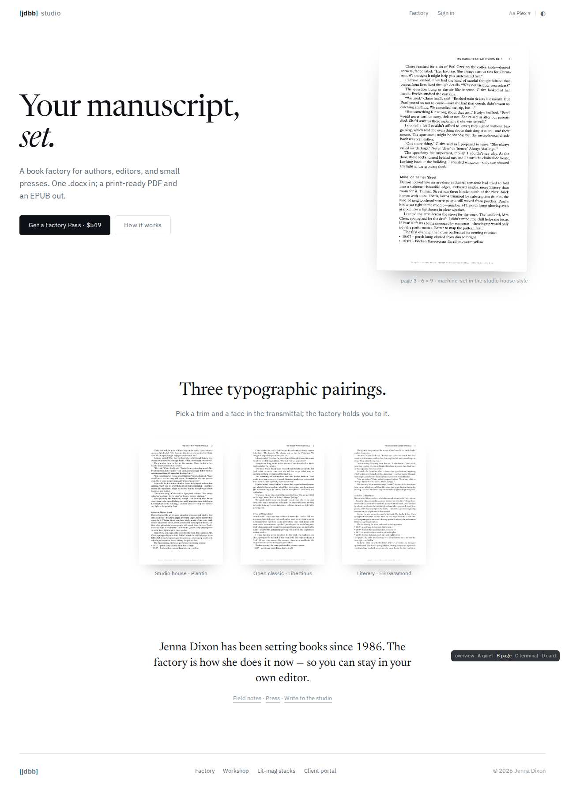
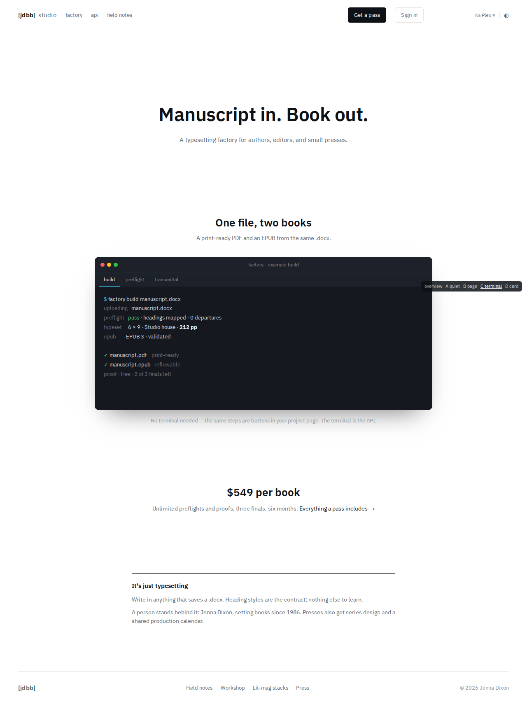
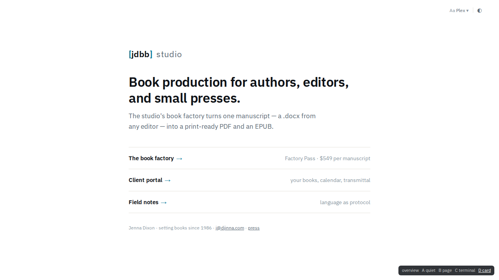

/Four comps after exe.dev's homepage: one headline, lots of air, one demonstration of the product, a price line, a short "it's just…" paragraph, a thin footer. Everything explanatory moves to /factory, which becomes the single long page. Scratch only — nothing here is deployed.

A · QuietClosest to exe.dev. Mono headline, then a .docx → typeset-page demo, price line, "It's just a typesetter", press line.
B · The pageEditorial. The typeset page is the hero, serif display type, three pairings as chips. Most "book", least "software".
C · TerminalThe exe.dev "API first" move: a tabbed build / preflight / transmittal readout. Replaces today's fake pipeline readout with the real protocol.
D · Index cardNo scroll at all. One sentence, three doors. The homepage as a switchboard;/factory does all the selling.
Current / block | Minimal / | Moves to |
|---|---|---|
| Status strip ("studio online · pipeline nominal", UTC) | gone | — (decoration) |
| Eyebrow + H1 + 3-line lede | one headline + one line | /factory keeps its long lede |
| Factory Pass card (4 bullets, $549, Redeem / Read more) | one price line + "Get a pass" button | bullets already live in /factory "What's included" |
Pipeline readout (fake ghosts-tp-01 job) | replaced by one real artifact (A/B: typeset page; C: build log) | /factory "How a build works" if kept |
| Capabilities — 5 subsystems | one sentence ("presses can have more…") | /factory new closing section "Working with the studio" (see Q1) |
| Spec strip (trim / pipeline / cadence) | gone | /factory "What's included" |
| Resources strip (stylesheet, field notes, workshop, lit-mags) | footer links | footer |
| Nav anchors (Factory pass · Capabilities · Client portal · Contact) | factory · field notes + Get a pass / Sign in buttons | — |
/ sells two things at once — the self-serve factory (a product with a price) and the studio (bespoke production for presses: calendars, series design, projects). /factory sells only the first, so both pages end up re-explaining the pass. Minimal / resolves it by being a door, not a pitch./factory, (b) its own short /studio page, (c) jdbb.net (/jdbb-net) already describes the studio in the first person — let that be the home for it./ could stay product-voiced (A, C) or lean personal (B, D). Having both apexes say nearly the same thing is the next overlap to avoid.